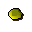
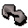
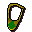
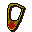
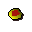
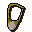
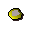
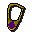
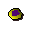

Gold bar
| Config name | gold_bar |
| Item id | 2357 |
| Value | 300 gp |
| Weight | 4lb |
| Members | No |
| Tradeable | Yes |
| Stackable | No |
| Defined in | scripts/skill_smithing/configs/smelting/smelting.obj |
Gold bar
It's a bar of gold.
Show 1 ground spawn on the world map → Open in knowledge graph →
How to make
| Skill | Level | XP | Ingredients | Tool | How | Where | Makes |
|---|---|---|---|---|---|---|---|
| Smithing | 40 | 22.5 | interface | furnace | 1 smelting |
Used to make
| Skill | Level | XP | Ingredients | Tool | How | Where | Makes |
|---|---|---|---|---|---|---|---|
| Crafting | 5 | 15.0 | interface | furnace | |||
| Crafting | 6 | 20.0 | interface | furnace | |||
| Crafting | 8 | 30.0 | interface | furnace |  Gold amulet | ||
| Crafting | 16 | 50.0 | chat menu Holy Symbol of Saradomin / Unholy Symbol of Zamorak / Silver sickle | furnace | |||
| Crafting | 17 | 50.0 | chat menu Holy Symbol of Saradomin / Unholy Symbol of Zamorak / Silver sickle | furnace |  Unstrung emblem | ||
| Crafting | 18 | 50.0 | chat menu Holy Symbol of Saradomin / Unholy Symbol of Zamorak / Silver sickle | furnace | |||
| Crafting | 20 | 55.0 | interface | furnace | |||
| Crafting | 20 | 40.0 | interface | furnace | |||
| Crafting | 24 | 65.0 | interface | furnace | |||
| Crafting | 27 | 55.0 | interface | furnace | |||
| Crafting | 29 | 60.0 | interface | furnace |  Emerald necklace | ||
| Crafting | 31 | 70.0 | interface | furnace | |||
| Crafting | 34 | 70.0 | interface | furnace | |||
| Crafting | 34 | 70.0 | interface | furnace | |||
| Crafting | 40 | 75.0 | interface | furnace | |||
| Crafting | 40 | 75.0 | interface | furnace |  Ruby necklace | ||
| Crafting | 43 | 85.0 | interface | furnace | |||
| Crafting | 50 | 85.0 | interface | furnace |  Ruby amulet | ||
| Crafting | 55 | 100.0 | interface | furnace | |||
| Crafting | 56 | 90.0 | interface | furnace |  Diamond necklace | ||
| Crafting | 70 | 100.0 | interface | furnace |  Diamond amulet | ||
| Crafting | 72 | 105.0 | interface | furnace |  Dragon necklace | ||
| Crafting | 80 | 150.0 | interface | furnace |  Dragonstoneamulet |
Dropped by
| NPC | Level | Quantity | Rarity | Via | Notes |
|---|---|---|---|---|---|
| 92 | 1 | 1/64 (1.56%) |
Sold at
| Shop | Shopkeeper | Stock |
|---|---|---|
| Drogo's Mining Emporium. | 0 |
Ground spawns
| Area | Coordinates | Level | Count | Map |
|---|---|---|---|---|
| Cooks' Guild (underground) | 3192, 9822 | 0 | 1 | view |
Quests
Goblin Diplomacy Digsite Watch Tower Legends Quest Waterfall
Referenced in scripts
scripts/_test/scripts/cheats/cheat_bank.rs2scripts/drop tables/scripts/greater_demon.rs2scripts/quests/quest_gobdip/scripts/quest_gobdip.rs2scripts/quests/quest_itexam/scripts/arcaeological_expert.rs2scripts/quests/quest_itexam/scripts/quest_itexam.rs2scripts/quests/quest_itwatchtower/scripts/ogre_guard.rs2scripts/quests/quest_legends/scripts/quest_legends.rs2scripts/quests/quest_legends/scripts/strange_barrel.rs2scripts/quests/quest_waterfall/scripts/quest_waterfall.rs2scripts/skill_crafting/scripts/jewellery/jewellery.rs2scripts/skill_magic/scripts/spells/superheat.rs2scripts/skill_smithing/scripts/smelting/smelting.rs2scripts/skill_smithing/scripts/smithing/smithing.rs2